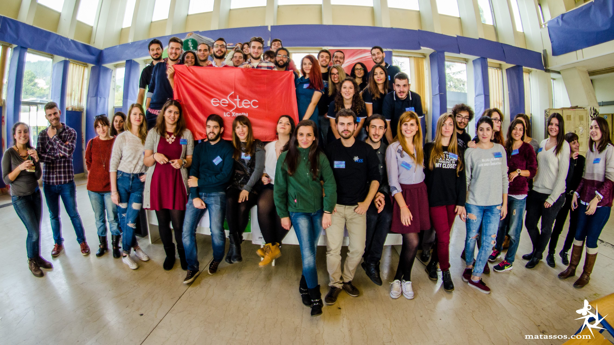

Eestec

EESTEC (Electrical and computer Engineering STudents’ European assoCiation) is a European non-political, non-profit organization, which is directed at university students relevant to Electrical and Computer Engineering throughout Europe. The organization was founded in Holland in 1986 and is present in 28 countries and 53 Universities, counting over 6000 members, 3000 of them active at the moment. The foremost target is the promotion of international communication and the concept of cultural exchange, as well as the improvement of the technical knowledge of the students, which is achieved with students’ exchanges in a variety of European Universities, where students attend labs and seminars from a wide range of subjects in a multicultural environment.
Local Committee of Xanthi

The local committee of Xanthi was founded in 2010 by students of the Electrical and Computer Engineering department of the Democritus University of Thrace. Back then, the committee consisted of only 2 members. In the early 2013 a vast increase of registrations was observed, and now LC Xanthi counts 35 active and over 150 registered members. The professor who is in charge of our committee is Georgios Kyriakou of the department of Telecommunications and Space Science. Our members are students, the local committee consists of students and is directed at them! The big size of our team enabled us to carry out our first international workshop, Rock the Bit, in November 2013, with 10 participants from all over Europe, which received outstanding reviews. The local committee of Xanthi now continues its activities with events and workshops both on local and on international level. On May 4th 2014, our local committee was promoted to LC, as a result of our members’ work.
Why participate?

Your registration in EESTEC Xanthi gives you the opportunity to take part in local and international events throughout mainly, but not only, Europe, to travel all around Europe, to meet and co-operate with Electrical Engineering Students, to get to know the industry and educational system of other countries and to live unforgettable experiences! Moreover, on a local level, you have the ability to participate in the organizing of local and international workshops, to take part in different teams, such as design, technology, promotion and fund raising team, to attend soft skills trainings and join in competitions. On an international level, every member can participate in the international action of EESTEC as a member of EESTEC International. And of course, through all these you can improve your CV!
The registration is free and can be done here!
ΠΡΟΕΔΡΕΙΟ
Πρόεδρος:
Θεόδωρος Ριζόπουλος
teorizop@gmail.com
Αντιπρόεδρος:
Κασσιανή Νικολοπούλου
kassniko0@gmail.com
Υπεύθυνος Επικοινωνίας:
Δήμητρα Φιλιππίδου
dimifili45@gmail.com
Ταμίας:
Δάνης Δεσίπρης
danis.desipris@gmail.com
Υπεύθυνος Δημοσίων Σχέσεων:
Χρήστος Τραϊανός
c.traianos1@gmail.com
Department of Electrical and Computer Engineering

The department of Electrical and Computer Engineering is part of the Democritus University of Thrace, which consists of 18 departments in Xanthi, Komotini, Alexandroupoli and Orestiada. The department was founded in 1975 in Xanthi as the department of Electrical Engineering and was the second engineering department of the university. It was later renamed as Department of Electrical and Computer Engineering to cover the uprising needs due to the evolution of computer science. Today, the personnel of the department consists of more than 45 TRS members, and a great number of research and administrative personnel.
The department consists of 5 sectors, the Power Systems Sector, the Electronics and Information Technology Systems Sector, the Telecommunications and Space Sector, the Physics and Applied Mathematics Sector and the Software and Application Development Sector. The university grounds were initially inside the city of Xanthi. However in 2008 the department was relocated in the new buildings of the Xanthi campus in the region of Kimmeria, near to the student residences. The high education quality and the many opportunities of academic progress it offers, list it in the highest choices of future students.
You can learn more about the department here.
XANTHI

Xanthi is situated in the region if Thrace in northern Greece, the crossroad of the Black and the Aegean Sea, of Europe and Asia. There, the waters of river Kosynthos surge into the valley after a lengthy trip of many kilometers on the mountains of Rodopi, surrounded by three monasteries, Panagia Kalamous, Panagia Archaggeliotissa and Taxiarches, as well as the remnants of the Byzantine town Xanteia. With approximately 65.000 residents, Xanthi is the commercial and spiritual center of the region, and of of its characteristics is the multiculturalism and the harmonic coexistence of Christians and Muslims.
The cultural life of the town is very intense. The carnival of Xanthi, which is famous throughout Greece, the Old Town Festival, which is unique and popular for the variety of music performed, and the Festival of Manos Hatzidakis are insurmountable events that upgrade the cultural features of the town. Separated in the Old Town, a magical and peaceful place, and the modern part of the town, Xanthi is rightly characterized as the “town with the 1000 colors” and with two faces, the old and the modern, each of them having its own unique features.
You can learn more about Xanthi here.